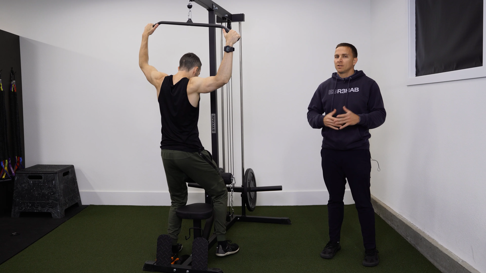
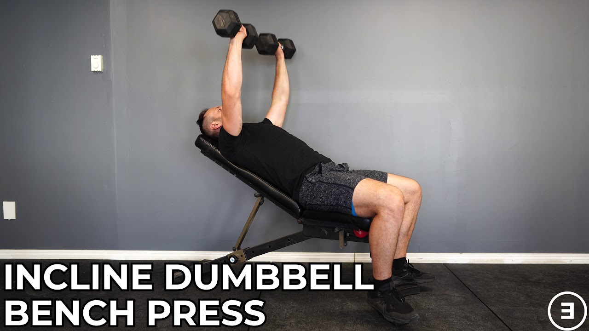
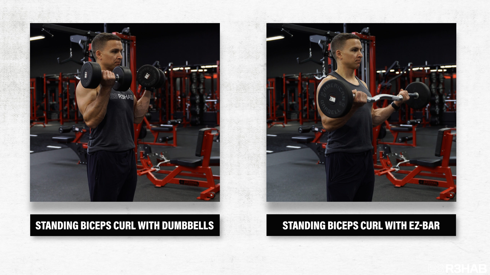
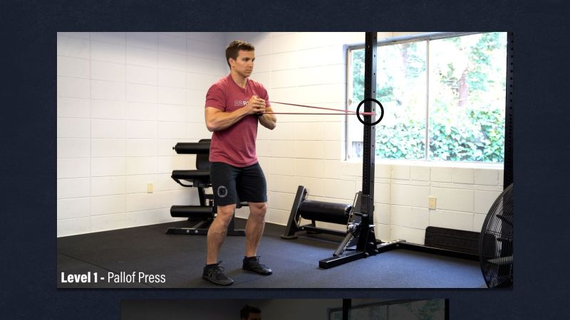
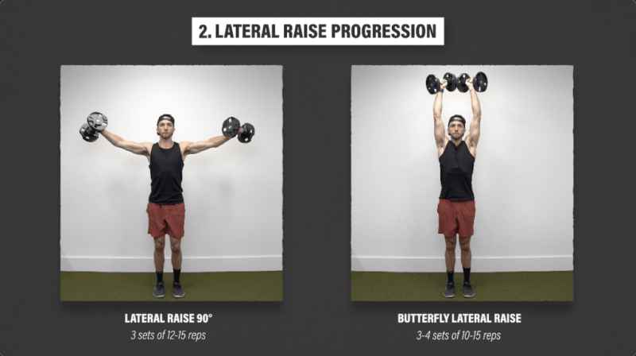
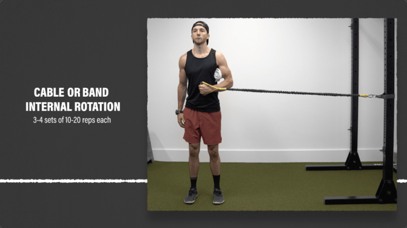
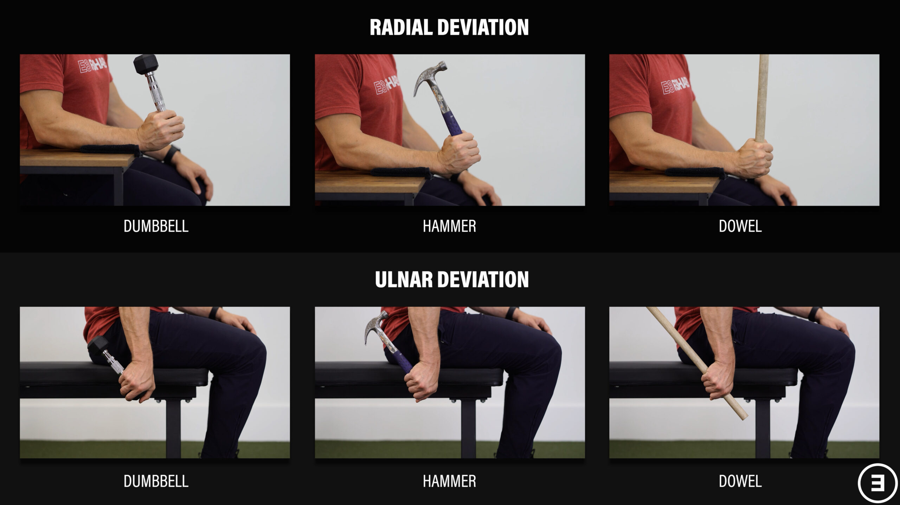
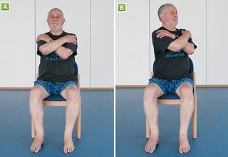
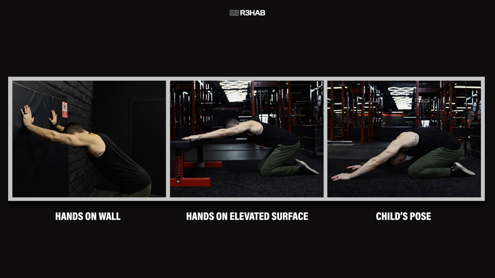

Your complete session
Upper B
Follow the sequence at your own pace. Choose manageable loads and comfortable ranges; leave the prescribed good repetitions in reserve.
Warm up
Easy bike or walk
2 minutes, easy

Keep this conversational and easy; adjust the bike to your comfort. Photo: Hospital for Special Surgery ↗ - Move easily enough to talk normally.
Keep this easy. Stop a movement that produces pain, catching, apprehension or loss of control; do not force end range.
Active wrist flexion and extension
1 × 8 full cycles, both wrists together

Gently bend and straighten the wrist. Add slow palm-up/palm-down cycles for the home option. Photo: E3 Rehab ↗ - Support forearms; move both wrists gently up and down.
Keep this easy. Stop a movement that produces pain, catching, apprehension or loss of control; do not force end range.
Open and close hands
1 × 10, both hands together
Open and close gently; keep the wrist comfortable. Photo: E3 Rehab ↗ - Open and close gently; do not squeeze maximally.
Keep this easy. Stop a movement that produces pain, catching, apprehension or loss of control; do not force end range.
Comfortable active shoulder elevation
1 × 8, both arms together

Raise only through your comfortable arc; reaching the photographed endpoint is not required. Photo: E3 Rehab ↗ - Raise arms in a comfortable direction; stop before a painful catch.
Keep this easy. Stop a movement that produces pain, catching, apprehension or loss of control; do not force end range.
Easy bilateral band external rotation
1 × 10, both arms together; very light

Keep elbows near the ribs and use very light tension. Photo: E3 Rehab ↗ - Elbows near the sides; rotate both forearms outward together.
- Do not twist the trunk or chase band tension.
Keep this easy. Stop a movement that produces pain, catching, apprehension or loss of control; do not force end range.
Move to first lift
1 minute transition allowance
- Set up the first exercise; this is not another working set.
Keep this easy. Stop a movement that produces pain, catching, apprehension or loss of control; do not force end range.
Strength & targeted rehab
Comfortable-grip lat pulldown
Strength · bilateral simultaneous; both arms together
Rest: 150 seconds between sets.
Light rehearsal sets first:
- 8 reps; rest 45 seconds afterward.
- 5 reps; rest 60 seconds afterward.
- 3 reps; rest 90 seconds afterward.
3 × 8–10 · 2–3 good reps left

Choose a comfortable grip and overhead reach; stop short of a painful catch. Photo: E3 Rehab ↗ - Sit securely and pull both handles toward the upper chest.
- Start from a comfortable overhead reach; no behind-neck pulling.
Stop the provoking set for painful catching, slipping/giving way, or meaningful loss of normal arm function. Do not test through it; recurring or substantial features warrant qualified assessment before progressing the provoking movement.
Low-incline dumbbell press
Strength · bilateral simultaneous; both arms together
Rest: 150 seconds between sets.
Light rehearsal sets first:
- 6 reps; rest 60 seconds afterward.
- 3 reps; rest 90 seconds afterward.
3 × 8–10 · 2–3 good reps left

Use the lower bench angle and comfortable depth specified in your plan. Photo: E3 Rehab ↗ - Press both arms together at a modest incline.
- Keep the descent within a comfortable depth.
Stop the provoking set for painful catching, slipping/giving way, or meaningful loss of normal arm function. Do not test through it; recurring or substantial features warrant qualified assessment before progressing the provoking movement.
Dumbbell supinated curl
Strength · bilateral simultaneous; both arms together
Rest: 90 seconds between sets.
3 × 8–12 · 2–3 good reps left

Keep the upper arms near your sides. Photo: E3 Rehab ↗ - Both arms together; keep upper arms near the sides.
- Keep wrists comfortable and avoid swinging.
Stop for new or increasing joint/tendon-region pain, loss of control or altered everyday function. Repeat the last tolerable dose or reduce it; persistent or substantial recurrence warrants assessment.
Pallof press
Strength · unilateral resistance direction; both sides
Rest: 30 seconds to rest and switch sides; 90 seconds after both sides.
2 × 8–12 each side · 2–3 good reps left

Press straight ahead without turning; shorten the reach if prescribed. Photo: E3 Rehab ↗ - Press and return; keep trunk quiet.
- Shorter reach reduces the shoulder/trunk lever.
Stop for new or increasing joint/tendon-region pain, loss of control or altered everyday function. Repeat the last tolerable dose or reduce it; persistent or substantial recurrence warrants assessment.
Dumbbell lateral raise
Rehab · bilateral simultaneous; both arms together
Rest: 90 seconds between sets.
2 × 10–15 · 2–4 good reps left

Raise through a comfortable arc; stop below shoulder height if needed. Photo: E3 Rehab ↗ - Both arms together, initially shoulder height or lower if comfortable.
- Do not push through a painful catch.
Stop the provoking set for painful catching, slipping/giving way, or meaningful loss of normal arm function. Do not test through it; recurring or substantial features warrant qualified assessment before progressing the provoking movement.
Cable internal rotation, elbow near side
Rehab · unilateral; both sides
Rest: 30 seconds to rest and switch sides; 90 seconds after both sides.
2 × 10–15 each side · 2–4 good reps left

Stand with the working arm toward the anchor; rotate toward your stomach. Photo: E3 Rehab ↗ - Keep elbow near your side; rotate forearm inward against the cable.
- Keep the trunk still and avoid pulling the arm behind your body.
Stop the provoking set for painful catching, slipping/giving way, or meaningful loss of normal arm function. Do not test through it; recurring or substantial features warrant qualified assessment before progressing the provoking movement.
Supported dumbbell wrist flexion
Rehab · bilateral simultaneous; both arms together
Rest: 60 seconds between sets.
2 × 10–15 · 2–4 good reps left

Support the forearm; curl the palm toward you. Photo: E3 Rehab ↗ - Forearms supported.
- Both wrists move together through a comfortable arc.
Stop for new or increasing joint/tendon-region pain, loss of control or altered everyday function. Repeat the last tolerable dose or reduce it; persistent or substantial recurrence warrants assessment.
Cable triceps pressdown
Rehab · bilateral simultaneous; both arms together
Rest: 60 seconds between sets.
2 × 8–12 · 2–4 good reps left

Keep upper arms near your sides and straighten the elbows. Photo: E3 Rehab ↗ - Keep upper arms near the sides and extend both elbows against the cable.
- Return through a comfortable bend without snapping into lockout.
Stop for new or increasing joint/tendon-region pain, loss of control or altered everyday function. Repeat the last tolerable dose or reduce it; persistent or substantial recurrence warrants assessment.
Resisted ulnar deviation
Rehab · unilateral; both sides
Rest: 30 seconds to rest and switch sides.
1 × 10–15 each side · 2–4 good reps left

Move toward the little-finger side with a short, light lever. Photo: E3 Rehab ↗ - Support the forearm and move the wrist gently toward the little-finger side.
- Anchor the band to resist that direction; keep the forearm still.
Stop for new or increasing joint/tendon-region pain, loss of control or altered everyday function. Repeat the last tolerable dose or reduce it; persistent or substantial recurrence warrants assessment.
Mobility
Seated thoracic rotation
1 × 6 each direction

Turn gently while keeping hips facing forward. Photo: NHS ↗ - Hands rest across chest; rotate gently without pulling with the arms.
Keep this easy. Stop a movement that produces pain, catching, apprehension or loss of control; do not force end range.
Supported shoulder flexion
2 × 8, both arms together; unhurried setup

Use forearm support if wrists prefer it and move only as far as comfortable. Photo: E3 Rehab ↗ - Rest forearms on support and move torso back gently.
- Stop before painful catching or apprehension.
Keep this easy. Stop a movement that produces pain, catching, apprehension or loss of control; do not force end range.
Use the interactive copy for swaps and temporary adjustments. No workout history is recorded.